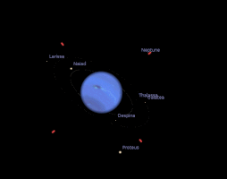
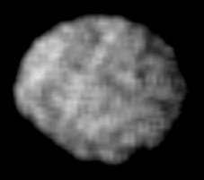
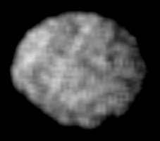

Neptune is the eighth and farthest known planet from the Sun in the Solar System the third-most-massive planet, and the densest giant planet. Neptune is not visible to the unaided eye and is the only planet in the Solar System found by mathematical prediction rather than by empirical observation. Neptune was subsequently observed with a telescope on 23 September 1846 by Johann Galle . nepptune was visited by Voyager 2, when it flew by the planet on 25 August 1989
Neptune's atmosphere is composed primarily of hydrogen and helium, along with traces of hydrocarbons and possibly nitrogen, but contains a higher proportion of "ices" such as water, ammonia, and methane
PHYSICAL FEATURES
aphelion 30.33 AU
perihelion 29.81 AU
Equatorial Diameter: 49,528 km
Orbit Period: 60,190 days (164.8 years)
Equatorial Diameter: 49,528 km
Polar Diameter: 48,682 km
Mass: 1.02 X 1026sus kg (17 Earths)
Moons: 14
Rings: 5
Orbit Distance: 4,498,396,441 km (30.10 AU)
Orbit Period: 60,190 days (164.8 years)
The fact is that
doesn't have a solid surface
second largest gravity of any planet
Neptune possesses a ring system
average surface temperature is -2140C
weight converter
weight on earth
weight on neptune
moons of neptune

moons of neptune
there are 14 moons for neptune . the major ones are as follows
 triton proteus galatea larissaTRITON
triton proteus galatea larissaTRITON